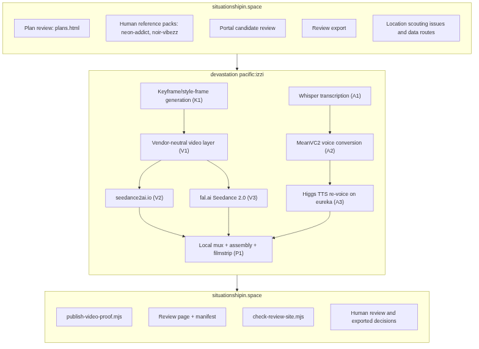
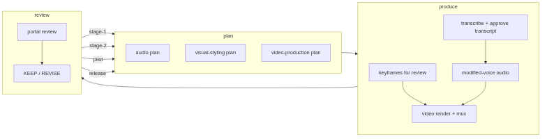

Workflow v2 Diagrams
Baseline v1 three-box workflow and workflow v2 plan-to-produce-to-review loop, authored by gpt-5.6-sol and render-verified under Mermaid v11.16.1.
Izzi generation commit: 12e0e5060162daab99538b46e061e971b655f434 · render-verified Mermaid v11.16.1 · 2 diagrams
-

Workflow Baseline v1 — three-box
Accepted section 5.1 three-box workflow: situationshipin.space to devastation pacific:izzi to situationshipin.space, with publish-video-proof.mjs carried in the bottom box.
-

Workflow v2 — plan to produce to review
Plan, produce, and review loop with the four stage-labeled review-to-plan feedback edges: stage-1, stage-2, pilot, release.